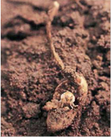
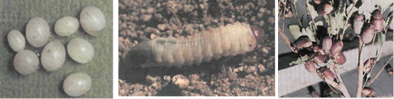

| Home |
| GROUNDNUT |
| 1. Aphids |
| 2. laef hopper |
| 3. thrips |
| 4. red hairy caterpiller |
| 5. leaf miner |
| 6. tobacco caterpiller |
| 7. gram pod borer |
| 8. pod borer (Ear Wig) |
| 9. pod bug |
| 10. Bud borer |
| 11. stem borer |
| 12. termites |
| 13. white grub |
| Questions |
| Download Notes |
PESTS OF GROUNDNUT :: Major Pests :: White Grub
13. White grub : Holotrichia consanguinea (Melalonthidae: Coleoptera)
Damage symptoms: Growth of plant is retarded. Plants wilt or die. Roots partially or fully eaten off by white and fleshy grubs.
 |
Bionomics: The dark brown adult beetles reenter the soil to hide and lay eggs. Female lays 20 - 80 white, roundish eggs in clusters. Egg period 9 - 11 days. Grubs are white and translucent. Pupates in soil and remain as pupae until the following year. The adult beetles emerge with the first monsoon showers.
 |
Management
- Plough deep at the time of land preparation to expose grub and kill.
- Adopt crop rotation with rice in irrigated endemic areas to bring down grub damage.
- Ensure adequate irrigation to irrigated groundnut in endemic areas since the grub attacks roots under inadequate soil moisture condition.
- Set up light traps or bonfires to attract and kill the adults on receipt of summer showers.
- Apply malathion or endosulfan or carbaryl dust @ 25 kg per ha in the soil prior to sowing during last ploughing.
- Repeat the same on 40 DAS and incorporate in the soil during earthing up.